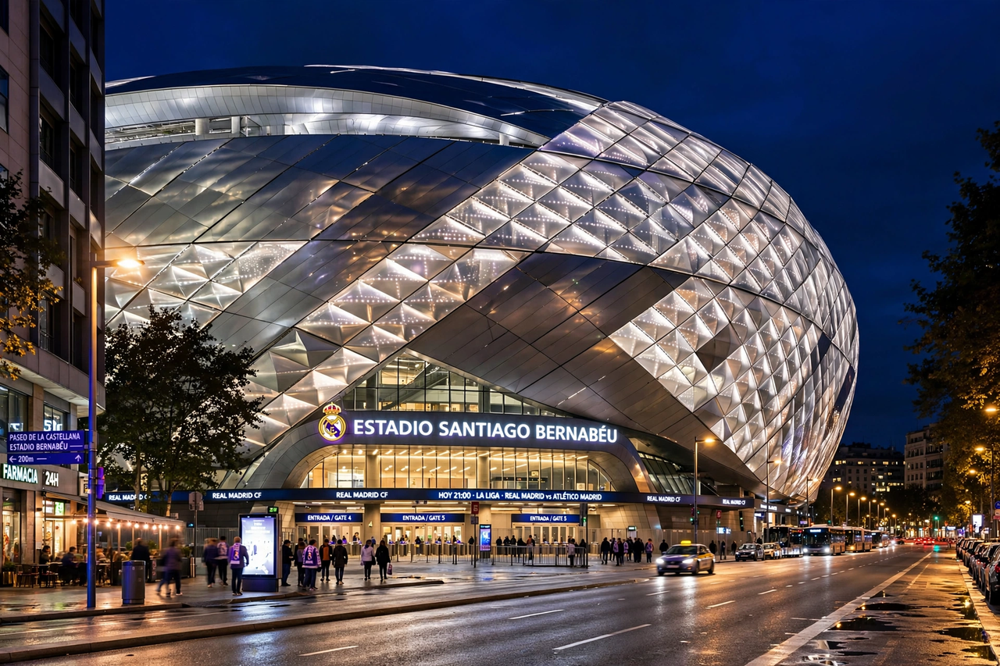

From Wikipedia, the free encyclopedia
| Santiago Bernabéu Stadium | |
|---|---|
 The renovated Bernabéu wrapped in its metallic shell, lit at night in central Madrid | |
| Location | Chamartín, Madrid, Spain |
| Opened | 14 December 1947 |
| Owner | Real Madrid CF |
| Capacity | About 83,000–84,000 (after renovation) |
| Named after | Santiago Bernabéu, former club president |
The Santiago Bernabéu Stadium is a football stadium in Madrid, Spain, and the home of Real Madrid since its completion in 1947. Named after the club's legendary president Santiago Bernabéu, it has staged four European Cup/Champions League finals, the 1982 FIFA World Cup final and the 1964 European Championship final. It is the customary home of the home leg of El Clásico in Madrid, facing FC Barcelona's Camp Nou.
A radical redevelopment begun in 2019 wrapped the stadium in a futuristic metallic envelope with a fixed roof, a 360-degree video scoreboard and a retractable pitch stored in an underground greenhouse, allowing year-round concerts and events. The works continued while matches were played in the stadium and were substantially complete by the mid-2020s, keeping capacity in the region of 83,000. The stadium sits on the Paseo de la Castellana, Madrid's main north–south avenue, in the Chamartín district.
The original ground, then called the Nuevo Chamartín, opened with a match against Portugal's Belenenses. It was renamed for Bernabéu in 1955 and repeatedly expanded, peaking at more than 100,000 capacity in the standing era before all-seater conversion. The Bernabéu's steep stands and intimidating atmosphere on European nights are central to Real Madrid's identity and mystique.
Categories: Santiago Bernabéu Stadium | Real Madrid CF | Football venues in Madrid